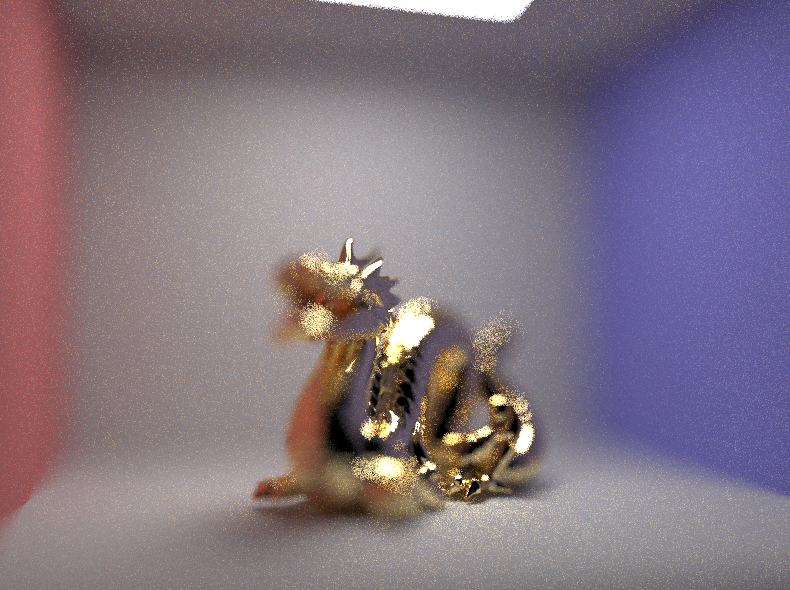

This projects builds upon Project 3-1 by adding more features to our pathtracer such as rendering more complex materials, providing environment lighting, and implementing depth of field effects.
In order to simulate mirror and glass materials, we first had to implement reflection and refraction. Reflection
is simply a transformation, mainly a reflection in 3D space about the normal (0,0,1) such that the z-axis points along
the normal vector. With the reflect helper function now available, rendering mirror materials is now just a
matter of setting the pdf to 1, calling reflect(), and returning the quotient of the reflectance
and the absolute value of cos(wi).
Glass materials require a bit more work. First we implement refraction(), where we use Snell's equations
and the index of refraction to refract the wo direction and then store the result in wi. However,
it is possible that Snell's law can give us a negative number under the square root. This means we have total internal
reflection and determine that refraction does not occur. In this case, we return false without assigning wi.
When sampling the glass BSDF, we must also keep track of whether or not we have total internal reflection. If we do,
we reflect. If not, we compute the Fresnel term using Schlick's approximation to find the reflection coefficient R
and use coin_flip(R) to
determine if we either reflect or refract.
Now we can have images with mirror and glass! The following images are rendered with 64 samples per pixel and 4 light rays.
|
|
|
|
|
|
|
|
|
Depth 0: There are no rays being cast. Only zero_bounce_radiance is being called, and we just see the
emitted lights.
Depth 1: We cast one ray, which is essentially a call to one_bounce_radiance so we only have direct
lighting here and have yet to have any reflectance or refraction on the spheres.
Depth 2: At two bounces, reflectance kicks in. As a result, with two rays
cast, the mirror sphere reflects the walls, and the ceiling is now illuminated. Since there has yet to be any refraction,
the glass sphere has only slight reflectance. These new effects -- global illumination and the slight
reflection of the glass sphere -- have yet to be featured in the mirror sphere.
Depth 3: Now we have ceiling illumination and the slight reflection of the glass sphere reflected in the mirror sphere.
The results of refracting are also now visible in the glass sphere.
Depth 4: The refraction effects of the glass sphere are reflected in the mirror sphere. There is also some light that
appeared under the glass sphere which results from refraction when wo exits the sphere.
Depth 5: With one more additional bounce, the light from the glass sphere reflected from the floor back up to the
glass sphere. This light is also reflected in the mirror ball and on the blue wall.
Depth 100: After five bounces, we can say that the mirror and glass spheres have converged. For after 100 bounces, although
the image looks slightly brighter, it looks very similar to the image rendered with five bounces.
In addition to mirror and glass, we can also render Microfacet materials. Specifically, we will implement isotropic rough conductors that only reflect such as copper, gold, aluminum, and silver. We begin by evaluating the BRDF using the following function:
As listed in the spec, F is the Fresnel term, G is the shadowing-masking term, D
is the normal distribution function (NDF), n is the macro surface normal (0,0,1), and h is the
half-vector. I calculated h to be the sum of wo and wi divided by the magnitude of
this sum.
G() has graciously already been pre-written for us, so all the modifications will be in the F()
and D() functions.
The NDF is found using the Beckmann distribution:
where alpha is the roughness of the macro surface and theta_h is the angle between h
and n.
The Fresnel Term is rather different in this situation than what we have previous calculated because here we are using
air-conductor interfaces which are wavelength-dependent. Previously, we were solving for air-dialectric interfaces,
which are not wavelength-dependent. As a result we modify our Fresnel term computation using the following approximation:
where n and k represent indices of refraction for conductors.
Here we can importance sample the Microfacet BSDF using pdfs pdf_theta and pdf_phi that resemble
the Beckmann distribution, which will give us less noise in our images. This will overwrite the original cosine hemisphere
sampling that was used to sample the Microfacet BRDF, which works for importance sampling diffuse BRDFs but not Beckmann distribution.
To begin, we find pdf_theta and pdf_phi:
To sample theta_h and phi_h according to the pdfs, we use the inversion method, in which the process
results in:
where (r1, r2) is a randomly sampled point in [0, 1).
Then we can combine theta_h and phi_h to get the sampled microfacet normal h and its pdf.
h is found by converting from spherical coordinates using theta_h and phi_h to
cartesian coordinates and the pdf w.r.t. solid angle is calculated using the following formula:
To get the final pdf of wi w.r.t. solid, we calculate using:
The following images are rendered with 128 samples per pixel, 1 light per sample, and 5 bounces.
|
|
|
|
|
|
When alpha is small, the dragon is smoother, shinier, and darker in color. As alpha increases, the dragon
loses its polish, becoming more matte and rough but also becoming brighter and more golden in color. This is because
alpha represents the roughness of the macro surface, so it follows, as mentioned in the spec, that the
microsurface of the dragon will tend to be diffuse when alpha is large and glossy when alpha is small.
The following two images were rendered at 64 samples per pixel, 1 sample per light, and 5 bounces.
|
|
|
Importance sampling better captures the bunny's copper material; however, as expected, cosine hemisphere sampling does not. While cosine hemisphere sampling does capture the highlights and shadows pretty well, it fails to effectively capture the variance in the reflectance in between the light and dark extremes. As a result, cosine hemisphere sampling leaves more visible gaps and returns a noisier and darker bunny.
I used this website to find the
following eta and k values for each RGB channel for Titanium:
eta: 2.6640 2.5400 2.3075
k: 3.7080 3.4300 3.0850
We now expand our light effects from direct lighting and global illumination to include infinite environment lighting
which lights an object from all directions on the sphere.
Our first task is to integrate the texture maps, which we can do by properly transforming the ray's direction into (x,y)
coordinates and then use bilinear interpolation on (x,y) to sample the appropriate Spectrum from envMap.
To make sure everything is working as it should, we first implement uniform direction sampling. We begin with a randomly
sampled direction on the sphere, converting the direction to (theta, phi) coordinates, and then converting again into (x,y) coordinates. We also make
sure to fill in the argument parameters, setting pdf to the uniform probability w.r.t. solid angle (1/4*PI),
distToLight to INF_D, and wi to the randomly sampled direction. To get the radiance value
at that location, we use bilinear interpolation on the converted (x,y) coordinates.
Now we can implement the more advanced method, importance sampling, to reduce the noise in images. Here importance sampling
works to increase the sampling in the directions that point towards bright light sources. These directions have the greatest
incoming radiance.
As described in the spec, we compute the pdf of each pixel in the environment map that is based on the total flux passing
through the solid angle it represents which we can then index into to get the radiance and pdf values. Which row we sample in the
environment map depends on the marginal distribution p(y), and which x-value we sample depends on the conditional
distribution p(x|y).
Computing the pdfs has been gifted to us, so all that remains is to normalize the pdf_envmap by dividing each value
by the sum total illumination. We then proceed to compute the marginal distribution. As we iterate through all the pixels in the
envMap, we sum all the pdfs for a given row. This sum is the marginal density p(j) for each y-value which
I keep track in another array (marginal_densities[j] = p(j)) to help me when computing the conditional densities.
To get the cumulative marginal distribution which is what we want, as we are iterating through all the pixels, we accumulate the
p(j)'s in a variable accumulated_sum (accumulated_sum += p(j)) and set
marginal_y = accumulated_sum.
Finally, we compute the conditional distribution. My approach to computing the conditional distribution was similar to
how I calculated the marginal distribution. First, we calculate the conditional density p(x|y) which equals
p(x,y)⁄p(y) by Bayes' rule. When iterating over every pixel in
envMap, this translates to the conditional density p(i|j) which equals the pdf value at
p(i,j) divided by the marginal density that was calculated previously, p(j). Now that we have
the conditional density p(i|j) for each i given j, we want the cumulative conditional distribution.
We accumulate the p(i|j)'s in a variable sum_row (sum_row += p(i|j)) and set
conds_y[w*j+i] = sum_row. sum_row resets to 0 every time we hit a new j.
Successfully initializing the probability distribution gives us the following colorful debug image:
Now we can index into the envMap using our computed probabilities. We first sample the row of the envMap.
Using the std::upper_bound() function, this y coordinate is calculated by iterating through marginal_y and
finding the first value that is greater than a random number on [0,1]^2. We then subtract the value by marginal_y to get
the appropriate index. Next we sample the pixel within the computed row. Similarly, we use std::upper_bound(). The x
coordinate is found by iterating through conds_y at the specified row and finding the first value that is greater than a
random number also on [0,1]^2. We then subtract by conds_y at that row to get the index. Using std::upper_bound()
in this way is analagous to using the inverse method.
Given (x,y), we can now fill in the argument parameters, setting wi to the converted (x,y)-->(theta,phi)-->dir
vector, distToLight to INF_D, and pdf to the envMap value at (x,y)
multiplied by the factor wh⁄2*PI*PI*sin(theta). Finally, we return the radiance
after using bilinear interpolation on the (x,y) coordinates.
Now we can render with more realistic lighting! I used the field.exr map for the following images, which were rendered with 4
samples per pixel, 64 samples per light, and 5 bounces.
bunny_unlit.dae Uniform Sampling |
bunny_unlit.dae Importance Sampling |
bunny_microfacet_cu_unlit.dae Uniform Sampling |

bunny_microfacet_cu_unlit.dae Importance Sampling |
As we can see (more clearly in bunny_microfacet_cu_unlit than bunny_unlit), the noise has reduced with
importance sampling. There is still visible noise for importance sampling at these sampling rates, but we can observe that there
is less noise in the highlights of both bunnies but more noise in the darker areas. This is because of our bias sampling of the
pdfs. We want to sample more where there's more incident light, so the pdfs are greater in the highlights whereas the pdfs are a lot
lower in the more shadowy areas.
What objects are in sharp focus versus what objects are blurred are determined by the depth of field. We can play with the focus
of our camera by simulating a thin lens.
Before implementing this part, we have been using an ideal pin-hole camera which captures an image where everything is in focus.
Of course, this is the ideal situation because we cannot see in complete focus. Real cameras and human eyes more closely represent
a lens model with finite apertures and focal distance limits. Objects become in sharp focus if they are within a plane that is at
focalDistance away from the lens and blurred otherwise.
Here is the scene in camera space:
In order to generate a ray, we need to find the point in focus, pFocus, and the point on the thin lens,
pLens. To get pLens, we uniformly sample the disk representing the lens using the parameters
rndR and rndTheta. To find pFocus, we notice that pFocus is the
intersection between the ideal pin-hole camera ray direction (the red segment), the ray direction produced by the thin
lens (the blue segment), and the plane of focus. Since all rays from the same point on the image plane will converge to the
same point in focus, regardless of where they pass through the lens, and the ray passing though the lens' center will not
change direction, we can compute the intersection of the red segment and the plane of focus to determine pFocus.
The ray represented by the red segment was computed in Project 3-1, so I copied my code and modified it such that the ray
direction is not transformed into world coordinates and negated. Calculating pFocus is now a means of multiplying
the ray direction by -focalDistance.
We can now generate the ray that has an origin of pLens and a direction of (pFocus-pLens) after
transforming from camera to world coordinates and offsetting the origin by pos. Now we can play around with the
focus to get some cool depth of field effects!
The following images were rendered at 64 samples per pixel, 4 samples per light, max ray depth equal to 8, and a fixed aperture size of 0.25. As the focal distance decreases, objects closer to the camera become more in focus while objects farther away are blurred.
|
|

|
|
|
|
These images were rendered at 64 samples per pixel, 4 samples per light, max ray depth equal to 8, and a fixed
focal distance of 2.1. As seen below, shrinking the aperture results in a sharper image. If the aperture size is 0,
the entire image is focus.
|
|
|
|
|
|